← 返回阅读库 · 原论文目录
论文讲解阅读文档 · 内容生成 · v013
Denoising Diffusion Probabilistic Models DDPM[2006.11239]
视频时长 00:31:43；讲解文字 11,778 字符；提取讲解画面 95 张。按视频原顺序阅读，每段文字保留时间戳。
文字来自整段视频的自动语音转写，按自然停顿分段，并与 PPT / 论文页面 / 演示画面对齐。未将讲解压缩为摘要；术语、数字和口述公式请结合画面及原论文核对。 阅读稿已校正规范部分明确术语误识别；原始逐字稿和每处修改记录另行保留。
讲解画面为源视频截图（640×360），不是可编辑 PPT 文件。全片按每秒 2 帧扫描内容变化，逐步展开页保留；连续动画保留代表画面。清晰度受源视频限制。
下载完整资料包 · 含离线 HTML、PDF、Word、全部 PPT 画面和字幕。
原论文与材料
Denoising Diffusion Probabilistic Models · 下载完整 PDF（25 页）
按时间阅读
00:00:00–00:01:06 · 画面 001
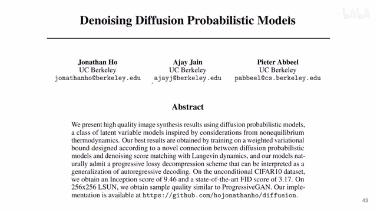
00:00:00–00:01:06 · 画面 001大家好,今天我们来快速说一篇论文 Denoising Diffusion Probabilistic Models, DDPM 那这一篇就是一开始使用 Diffusion Model 去做无条件的图像生成的这么一个任务这一篇文章那么这个视频在逻辑上是承接上一个视频的因为我们在中间会有很多的数学推导跟原始的 Diffusion Model 有相似的地方我这些地方就直接就请你看到上一个视频的某个时间点是这样处理的，而且依照我们的惯例，也不会说去讲代码配环境这些东西，更多的是我们跟着作者的逻辑，把这个文章给他理清一下。所以你如果只是想学一个代码怎么跑对吧？网上的教程真的是太多了，我是劝退你看这个视频的。
但是呢，你如果就是晚上睡不着，一想到我每次只把 DDTM 当黑盒子用，完全不知道它为什么 work，那么这种情况呢，你可以继续看下去。好了，那么我们直接一个 intuition 开始。
00:01:06–00:02:14 · 画面 002
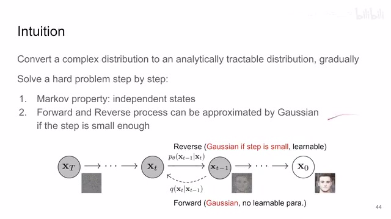
00:01:06–00:02:14 · 画面 002首先我们还是从这个 Diffusion Model 开始。Diffusion Model 的核心就是我们对于一个我们现实中有的数据集，这个数据集它的数据的分布 Distribution，它可能是一个很复杂的，很没有章法的这么一个分布。这就意味着我们不太好去用一个数学模型去描述它。不好描述也就意味着你没法做一些好的生成任务。
与此同时有一些好的简单的这些数据的分布。概率分布比如说像高斯分布。还有二项分布这些东西。我们数学上他们的工具很完备了。但是理论上这么好的东西。现实里一般都是不存在的。所以 diffusion model 的核心跟其他生成式模型一样就是我能不能想办法通过一步一步的把我实际的 distribution 给它变换一点一点的给它变换变换变换变换到最后让它变成一个让它从一个杂乱无章的。
一个复杂的 distribution变成一个简单的好分析的。比如说高性 distribution这种东西那么这里我们把一个从复杂的 distribution。
00:02:14–00:02:15 · 画面 003
00:02:14–00:02:15 · 画面 003变到我们目标想要的一个简单的 distribution。
00:02:15–00:02:30 · 画面 004
00:02:15–00:02:30 · 画面 004这个过程从这边原始数据到造生的这么一个过程。这个过程叫做前向的过程。反之我们从一个标准的一个造生。一个 distribution 里面
00:02:30–00:02:31 · 画面 005
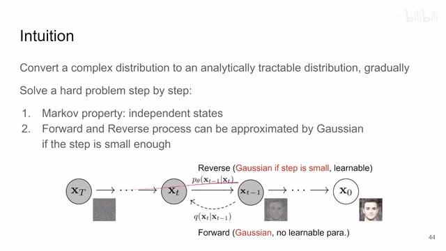
00:02:30–00:02:31 · 画面 005逐渐的还原出我们原始数据分布里面的样本。
00:02:31–00:02:35 · 画面 006
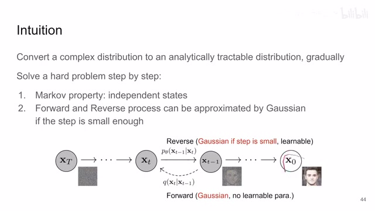
00:02:31–00:02:35 · 画面 006这样一个过程我们叫它 reverse
00:02:35–00:02:38 · 画面 007
00:02:35–00:02:38 · 画面 007也就是它的逆过程。
00:02:38–00:03:48 · 画面 008
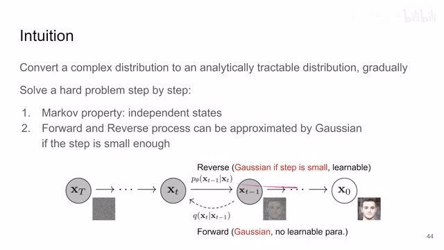
00:02:38–00:03:48 · 画面 008那么这就引出了我们变换中会一直使用的两个重要的条件。第一个呢就是这个 Markov 性质。Markov 性质我们是一个上一个视频里面讨论了很多了。本质上它就是没有记忆的一个性质。也就是说我当前的一个状态比如说这个 XT 它只跟自己有关。它能够描述当前整个系统这个分布的这个状态了。就是说我不需要借助之前或者之后的信息，当前的时刻就可以了。这个 Markov 性质。
那么第二点呢也是非常重要的一点就是在这个物理这个 diffusion 过程中我们发现，只要我两个状态两个时刻就是这个状态的变换这个过程我变换的这个尺度幅度非常小。只要这个变换的尺度非常小，我无论是正向的去变换。我就是从 T0 时刻到 T1 时刻那只要我这个变化的幅度足够小，我就可以把这个变化的过程近似为一个比如说好的这个像 Gaussian distribution 像这个 Binomial distribution 可以做这样一个近似。那么有了这样一个近似之后呢我们整个的这个变化的过程呢就可以被数学工具分析了。
00:03:48–00:04:15 · 画面 009
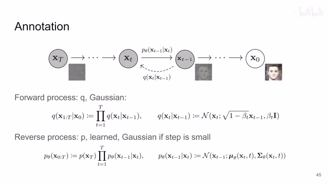
00:03:48–00:04:15 · 画面 009下面呢我们就来开始从这个首先标记开始。那么 x 呢是我们要变换的数据，它的下标呢是我们变换的次数。x0 呢就是没变换的原始的数据。那一共呢要变换这个 capital t 一次。那最后变换的这个 xt 呢就是我们最终的想要变换的这个目标。也就是我们期望的一个好的一个标准的一个 distribution。那么对于一个前向过程来说呢，它就是从 X0 一直变到 XT 嘛，一步一步来嘛对不对？但是呢你因为有这个马尔科夫性质，每一步变化呢都是相互独立的。所以呢你可以把这个条件概率直接乘起来。在这里呢我们假设每一个变化呢都是这个 gaussian distribution 我们它的这个本质呢就写成这样的一个形式。那这个是均值，这个是这个方差嘛。
00:04:15–00:04:16 · 画面 010
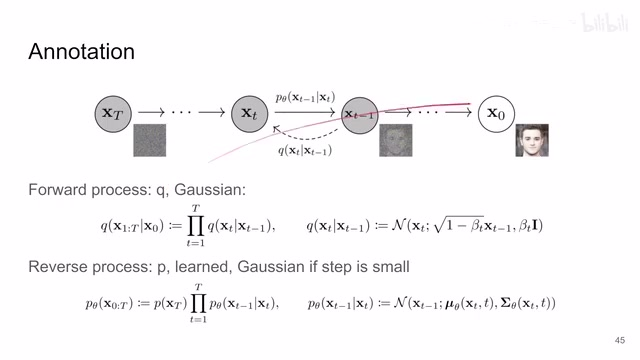
00:04:15–00:04:16 · 画面 01000:04:16–00:04:17 · 画面 011
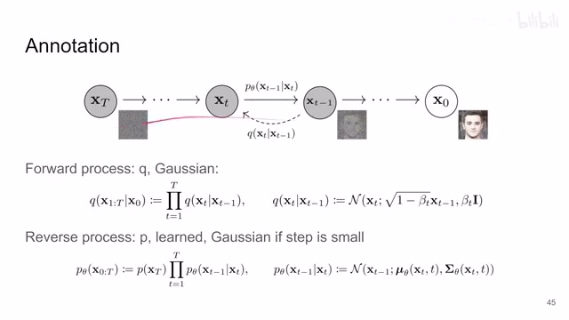
00:04:16–00:04:17 · 画面 01100:04:17–00:04:33 · 画面 012
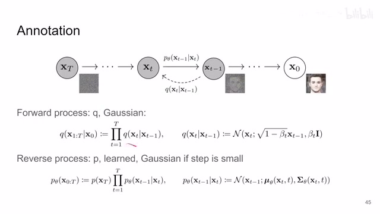
00:04:17–00:04:33 · 画面 01200:04:33–00:04:34 · 画面 013
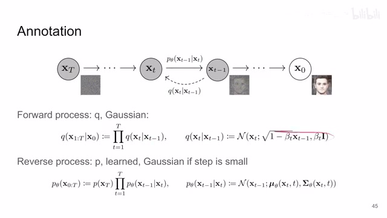
00:04:33–00:04:34 · 画面 01300:04:34–00:05:02 · 画面 014
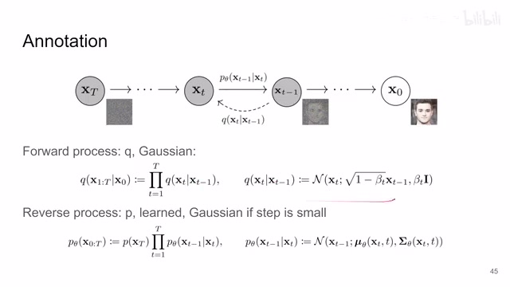
00:04:34–00:05:02 · 画面 014那注意看这里的这个βt 呢是一个和 t 有关的这么一个非常小的一个数。它呢用来控制这个我们每一步 diffusion 的这个程度。你可以看到呢这个当这个βt 非常小的时候对吧，整个这个系数接近 1，说明我们均值不太怎么变。然后呢我们也没有引入更大的这个方差，方差呢基本就是 0 啊。这个变化是长这个样子。但是你想呢，随着这个变化呢不断累积，每次呢这个 x-1 都会变小一点点啊，都会变小一点点。那么变到最后呢这个 xt 的时候呢，它的这个均值呢就变成 0 了。那么至于为什么说我们的这个系数是 1-beta t 开根号对比我们的方差呢就是 beta t，为什么它们两个存在这样的关系。
00:05:02–00:05:13 · 画面 015
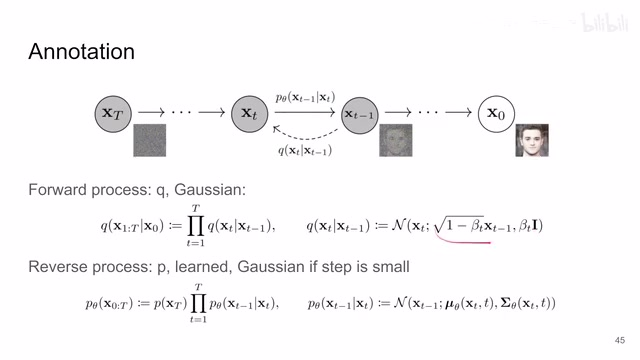
00:05:02–00:05:13 · 画面 01500:05:13–00:05:14 · 画面 016
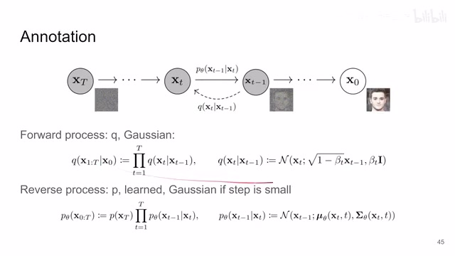
00:05:13–00:05:14 · 画面 01600:05:14–00:06:22 · 画面 017
00:05:14–00:06:22 · 画面 017我们在上一个视频里面也讨论过。简单来说呢就是它们这个样子。能够满足我们的这个方差不变。在我们正向迭代很多次的时候呢，能给我们一些数学计算上的便利。这个呢我们在上一个视频里面讲过，然后呢后面呢我们也会简单的提一下。那么与之相似呢我们这个反向的过程，就是一个从一个标准的这个分布，一个噪声一样的这个杂乱无章的分布，逐渐变换变换变换回我们的，感觉有意义的这个数据上这个分布。
而在这个过程中呢，我们并不知道对吧我从噪声添加到信息，我们应该恢复多少东西，因此呢我们使用一个网络，这个θ它的参数是θ用它呢来去表示这个过程中的各种的具体的这个参数。那这里的 xT 对吧就是我们的这个原始的这个标准的噪声，下面这个反向的过程呢，就是图像生成的过程。
00:06:22–00:06:27 · 画面 018
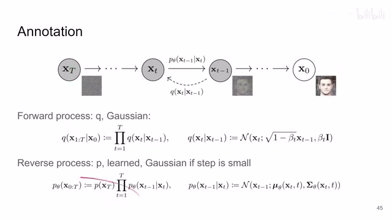
00:06:22–00:06:27 · 画面 018同样的呢因为这个马尔科夫性质，对吧你这几个东西
00:06:27–00:06:43 · 画面 019
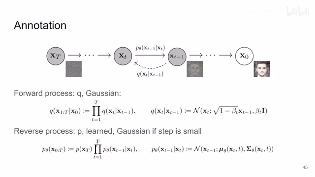
00:06:27–00:06:43 · 画面 019它可以直接的连成起来。那么根据我们之前说的第二个条件，当我们的这个两个变化之间，足够小的时候我们可以认为正向过程和反向过程比如说它们都是 gaussian distribution 那么这样子呢我们就把这个东西写一下你看到一个 gaussian distribution 它需要什么呢对吧它需要一个均值它需要一个方差那这些东西呢留着让我们的这个网络它给我们估计出来就好这个呢就是我们的这个前向和这个反向的过程。
00:06:43–00:06:44 · 画面 020
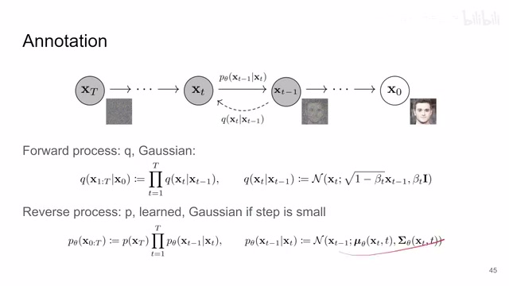
00:06:43–00:06:44 · 画面 02000:06:44–00:06:55 · 画面 021
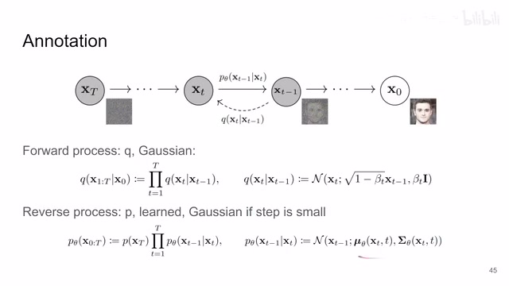
00:06:44–00:06:55 · 画面 02100:06:55–00:06:56 · 画面 022
00:06:55–00:06:56 · 画面 02200:06:56–00:06:59 · 画面 023
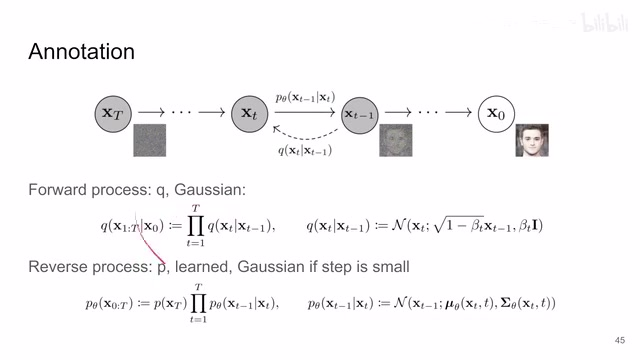
00:06:56–00:06:59 · 画面 023那么现在我们有了这个网络我们就可以在数学上开始考虑我怎么样应该去训练它那么这里呢跟许多其他的生成式模型一样，
00:06:59–00:07:25 · 画面 024
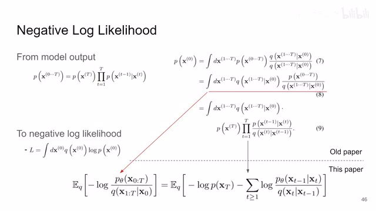
00:06:59–00:07:25 · 画面 024我们呢去衡量一下我们模型的生成的东西和我们实际的这个数据的这个 distribution 他们的这个 log likelihood 就可以了那首先呢我们先来表示一下模型的这个生成的过程对吧从 XT 一步一步迭代下来就是说这就是那个反向的过程嘛对吧这个呢在上一篇论文里面他写的这个描述那么这个式子呢相当于一个大的这个联合概率密度函数。
00:07:25–00:07:26 · 画面 025
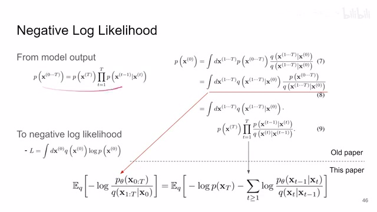
00:07:25–00:07:26 · 画面 02500:07:26–00:07:29 · 画面 026
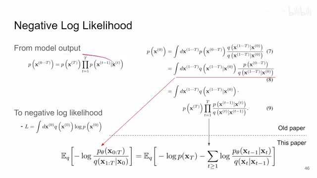
00:07:26–00:07:29 · 画面 02600:07:29–00:07:47 · 画面 027
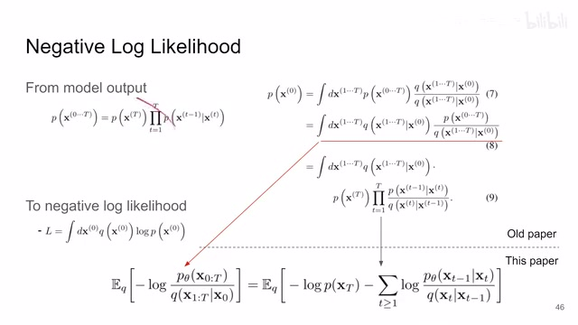
00:07:29–00:07:47 · 画面 027它里面包含了从 X0 一直到 XT 这些所有变量所有变量在一起的时候它考虑的联合概率密度分布这个时候其实我们只关心我们模型的输出也就是 X0 所以我们就需要把 X0 边缘概率密度给它积分从大的模型中给它积分积出来。
00:07:47–00:07:54 · 画面 028
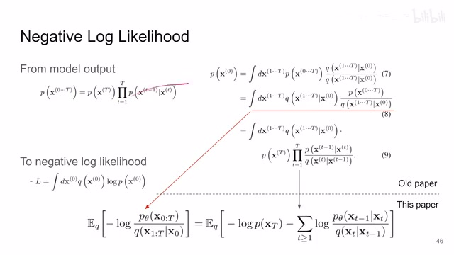
00:07:47–00:07:54 · 画面 02800:07:54–00:08:14 · 画面 029
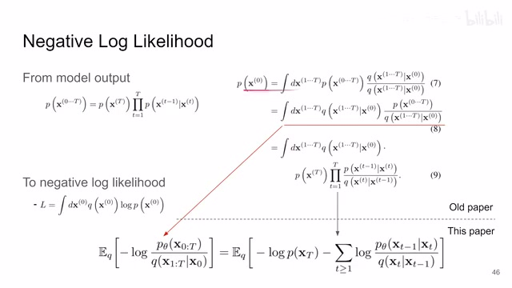
00:07:54–00:08:14 · 画面 029那这里呢你看到我们把其他的跟 X0 无关的从 X1 到 X7 这些变量对它们进行积分这个呢是我们的概率密度函数那右边呢是我们新添加的以上上下分子分母都一样形式呢化成这个形式这个呢是上一篇的这个处理方法那么这个式子呢就把我们这个模型生成样本这个 X0 对吧它的这个概率密度分布就是一个边缘密度概率密度就是这个边缘概率密度分布。
00:08:14–00:08:17 · 画面 030
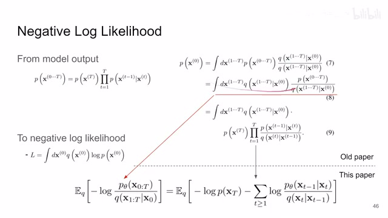
00:08:14–00:08:17 · 画面 03000:08:17–00:08:28 · 画面 031
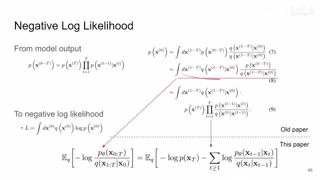
00:08:17–00:08:28 · 画面 031给它表示出来了就是这样一个式子那么在本文里面呢我们想要计算这个 negative log likelihood 我们有这个模型的这个输出我们再拿到我们原始的数据的这个 decibution 对吧根据这个 log likelihood 的定义对我们最终的这个 x0 这个变量来积分最后我们这个 log likelihood 就可以算出来了到时候取个负号就好了嘛对吧那下面我们来看具体的这个项目里面有什么啊首先积分的项目。
00:08:28–00:08:48 · 画面 032
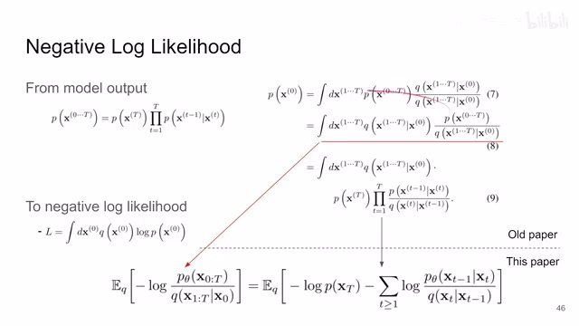
00:08:28–00:08:48 · 画面 03200:08:48–00:08:53 · 画面 033
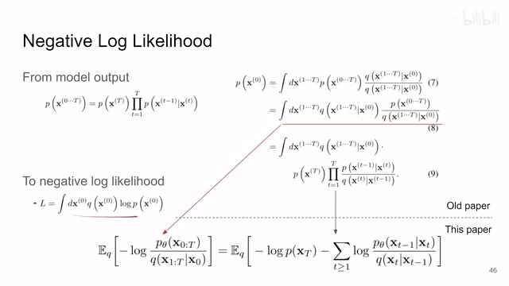
00:08:48–00:08:53 · 画面 03300:08:53–00:09:12 · 画面 034
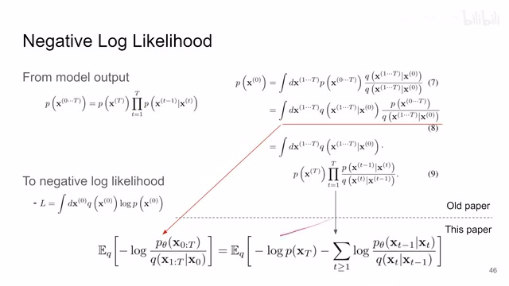
00:08:53–00:09:12 · 画面 034这个 PX0 里面包含了从对 X1 一直到 XT 的积分这里呢 logal likelihood 包含了对 X0 的积分所以积分这里呢我们是从 X0 一直积分到这个 XT 那么然后呢再看概率的这一项这个是个条件概率对吧然后呢这边呢正好是它的条件这个 Q 那么这两项一乘起来。
00:09:12–00:09:13 · 画面 035
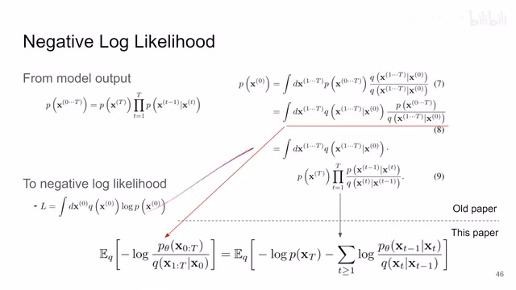
00:09:12–00:09:13 · 画面 03500:09:13–00:09:30 · 画面 036
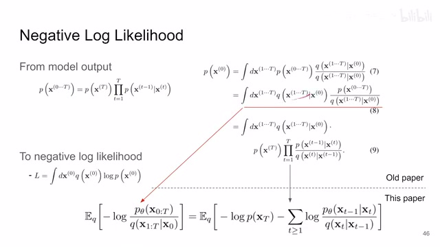
00:09:13–00:09:30 · 画面 036那乘起来之后呢就是 X0 和 X1 到 T 的它们的这一个联合概率分布但是你如果观察 X1 到 T 的这个联合概率分布呢对吧根据我们的这个它的这个前向过程的这么一个定义它就是一个条件概率的一个集联那么集联就导致你不断的乘不断的乘就条件概率呢不断的被解开。
00:09:30–00:09:53 · 画面 037
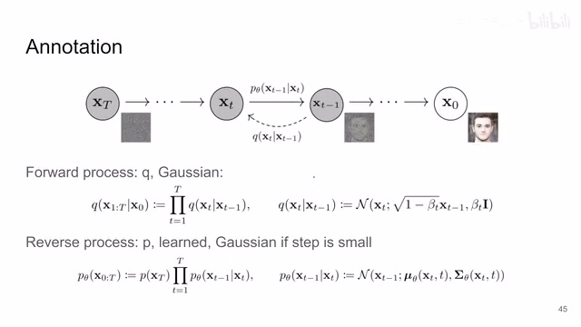
00:09:30–00:09:53 · 画面 037那么解开到最后呢就是一个 q 关于 x0 一直到 xt 的整个的一个联合的这个概率分布所以呢正好对吧因为我们对所有的 x 积分这里呢又有一个关于对于所有 x 的这个联合的这个概率分布对吧我们呢就把它写成一个期望的形式。
00:09:53–00:10:09 · 画面 038
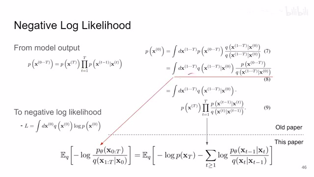
00:09:53–00:10:09 · 画面 038那么期望的里面是什么呢？我们还剩下右边这一块对吧？然后呢，注意这里要乘上这个 log 项，log 打在哪里？打在这里。那么然后你就继续化解嘛，对吧？在上一篇文章里面我们有这个式子，乘上一个 log 的形式，连成就变成了这个求和。最后写出来呢就是这个样子。这个呢就是我们想要找到的这个 negative log likelihood。我们想让它变得越来越小。那么然后呢，我们就把这个 negative log likelihood
00:10:09–00:10:10 · 画面 039
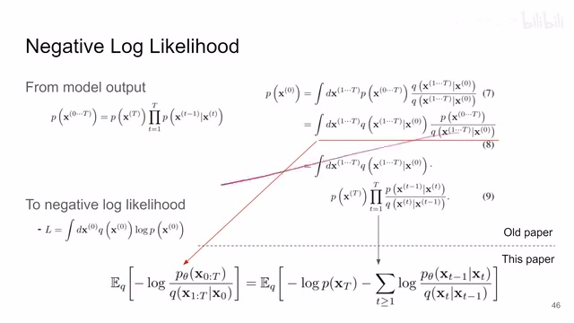
00:10:09–00:10:10 · 画面 03900:10:10–00:10:23 · 画面 040
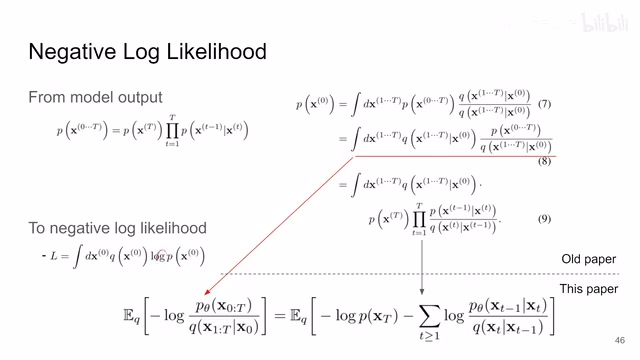
00:10:10–00:10:23 · 画面 04000:10:23–00:10:24 · 画面 041
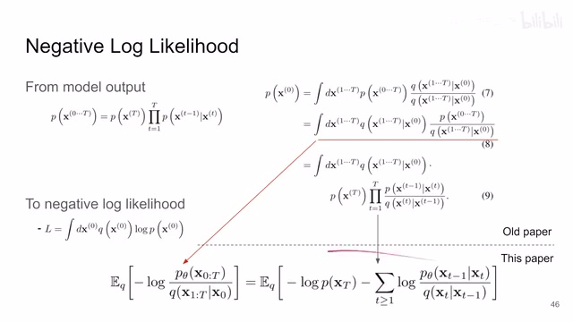
00:10:23–00:10:24 · 画面 04100:10:24–00:10:33 · 画面 042
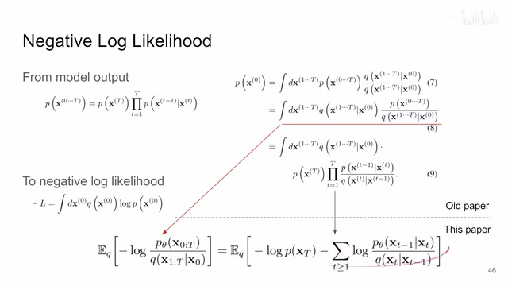
00:10:24–00:10:33 · 画面 04200:10:33–00:10:38 · 画面 043
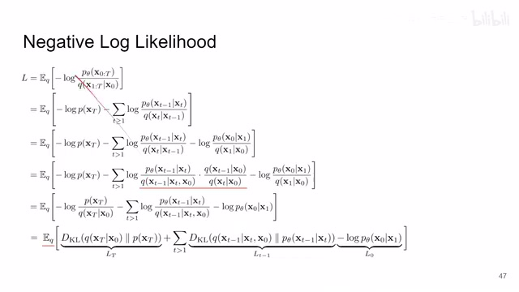
00:10:33–00:10:38 · 画面 043给它化解，没对吧？我们上一页刚刚讲到落到这里。那么再往下呢，你可以看到非常简单。首先第一步呢，就是我这里首先把 t 等于 1 的这个情况给它拆出来，单独拆出来一个
00:10:38–00:12:22 · 画面 044
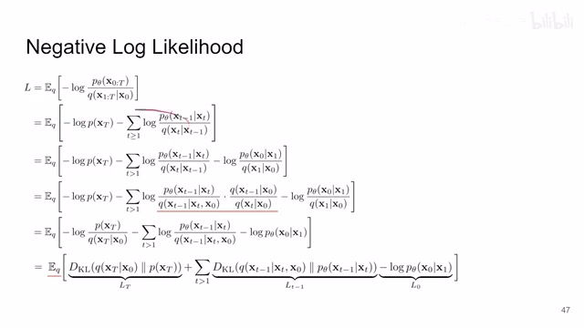
00:10:38–00:12:22 · 画面 044两组写这个没有什么问题。那么拆出来之后呢，我们再观察中间这个式子。那这里呢，我们要进行两步操作。第一步呢，就是首先根据这个 base 公式对吧？我想把这个 xt-1 和这个 xt 它俩这个条件关系给它倒个个。那这个是好做的对吧？base 公式把它俩换过来之后乘一个这个 qst-1 再除一个这个 qst 就好了。那然后同时呢，我希望这个过程会多一个 condition 叫做 x0注意这里我们要再次使用 Markov property，就是 x0 和这些东西或者说这些所有的其他的带角标的 x 它们是相互独立的。相互独立就意味着你可以直接把概率给它塞进来，并不影响这个数的值
所以你在这里塞 x0 塞 x1 塞了多少都无所谓那这里你把这个 x0 塞进来那么同样的这些项都是你可以直接把这个 x0 塞进来那么这个样子的式子呢给了我们一个很好的性质你看到对吧我们是求和同时呢求和的是什么呢是 xt-1 减去这个 xt 一个求和从 2 开始一直到 t 那么相邻的两项一个减一个加就给它相互取消掉那最终呢，你会剩下一个要加上这个 q given x0 x1 减去一个 q given x0 xcapital t 就是个大 t 啊。你把这个 given x0 到 xcapital t 这一项给它拿到前面来，你把这个 given x0 x1 拿到后面去对吧？那就是直接乘嘛对吧？就是乘上这一项了。所以呢，这项就直接取消掉了，就剩下了这个。最终呢，这个式子呢就化简成了这样
00:12:22–00:12:25 · 画面 045
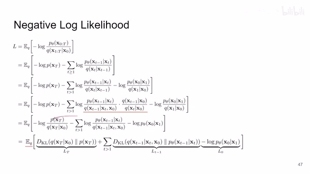
00:12:22–00:12:25 · 画面 045那么这个式子呢，我们来观察，因为我们这个期望写的是 x 从这个 q 这个计算中 sample 出来。那具体来说呢，这个期望的过程中对吧？它的 sample 的过程中它这个积分的这个过程中那就是对 x1 一直到 xt 都有一个积分项在里面。那其实对这一项来说，我只要给它一个 pxT
00:12:25–00:12:31 · 画面 046
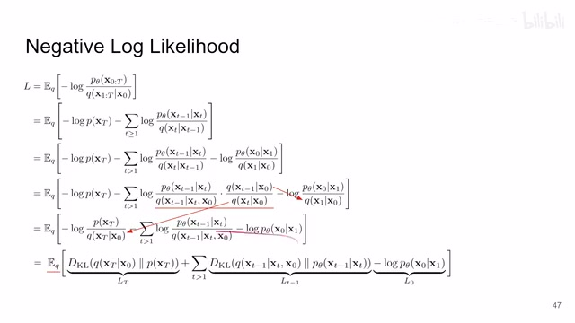
00:12:25–00:12:31 · 画面 04600:12:31–00:13:39 · 画面 047
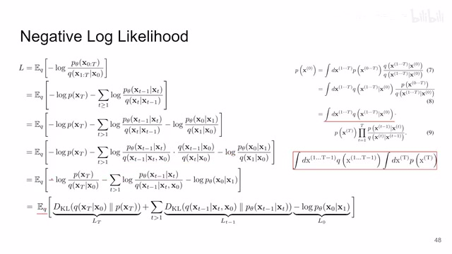
00:12:31–00:13:39 · 画面 047那它就可以凑成一个 KL divergence 形容这样的 KL divergence 对吧？所以我就从这一串积分中把这个 XT 给它抓出来，给它塞到这个里面。这是一个 KL divergence。那么剩下的这些变量你可以原封不动的留在这里。所以这就是一开始为什么你觉得从这个地方变到这个地方，我们明明有应该有一个积分拿出来了对吧？它变成 KL divergence 那为什么它现在还写在一个期望里面那么然后咱看第二项这个球核这一堆，同样的也是对吧？那我主要凑数一个这个 Pθ given 到 的这么一个这个积分。那它是不是就可以又形成一个 KL divergence 呢？答案也是可以的。那比如说这里的 t 等于 2，这里就是 x1，你把 x1 对 x1 的积分抓出来，它就是一个 KL divergence。那剩下的这些东西呢，你还是积分塞在这个切网里面
00:13:39–00:13:40 · 画面 048
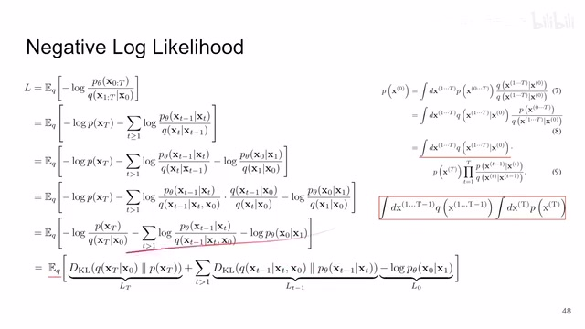
00:13:39–00:13:40 · 画面 04800:13:40–00:13:55 · 画面 049
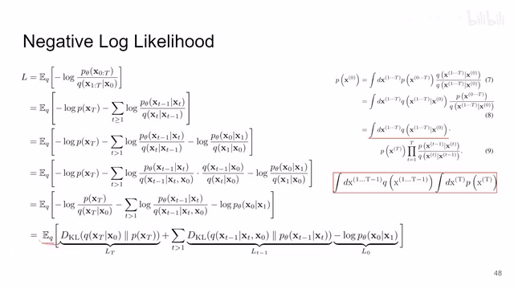
00:13:40–00:13:55 · 画面 049那么所以呢，这个东西也跟它一样，也能变成一串这个 KL divergence 都一样的。那么最后这一下呢，我们就不变了，我们就给它留在这里。那么这个呢，就是经过一系列的化解，我们把这个 negative log likelihood 化成了对吧？一个期望的形式，期望里面有什么有两个 KL divergence 还有一个这个东西
00:13:55–00:13:56 · 画面 050
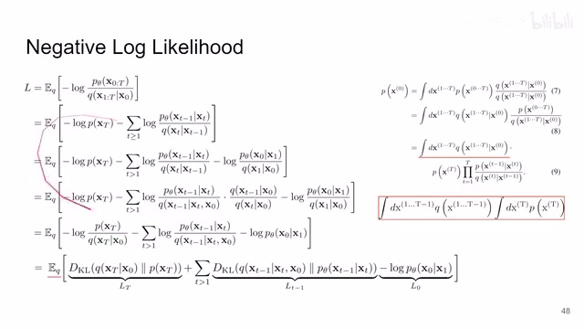
00:13:55–00:13:56 · 画面 05000:13:56–00:14:05 · 画面 051
00:13:56–00:14:05 · 画面 05100:14:05–00:16:05 · 画面 052
00:14:05–00:16:05 · 画面 052我们下面就来开始着手去来解决我们这个原来一个柿子里面一个头疼变成了三个头疼，我们分别来看怎么解决首先我们来看到这个 LT 和这个 LT-1 里面我们想要求它这个 care divergence 我们必须知道这个 care divergence 两项里面这个几岁标准它们的这个具体的信息比如说你做一个高深几岁标准来讲你的均值是多少你的方差是多少对吧知道这个我们才能去计算 care divergence 那具体来看我们对于这一项来说这个 PXTT 这个东西这个东西是我们期望中的一个目标的一个标准的正态分布它我们是知道的对吧现在呢我们就需要关注一下这个 Q given X0 到 XT 这个过程那同样的对吧 PC 的这个东西呢是我们的网络需要给我们估计出来的你可以说现在我们也是我们总会有一个值对不对它也是知道的那同样的呢我们只需要关注这个 Q given XT X0 到这个 XT-1 这个过程
它的这个均值和方差是多少就可以了那具体我们怎么来求这个东西呢那这就需要我们来看我们到底是怎么从 xt 取到 xt 加 1 的我们呢因为这个假设这个过程这个 diffusion 的过程是高深 diffusion 那根据第一篇这个论文的它的这个解释呢我们的定义呢长这个样子这是一个 reparameterization 的形式这是 xt-1 对吧它乘上这么一个系数这个是均值然后呢我们的方差是这个√1-αt后面这个ε就是从一个标准正态分布里面采出来的这么一个值这是一个标准的 reparameterization trick 用这个表达式来描述这个 distribution
那其中呢这个αt 呢等于 1-βt 就是我们之前说的这个 diffusion rate 它是一个很小的值所以说αt 呢是一个接近 1 的值那根据这样的一个定义呢我们把它不断的迭代下去我们这个是从 xt-1 推出 xt 那现在我们把这个 xt-1 换成从 xt-2 推出这个 xt-1 再推出 xt 对吧把它代入进来这里呢我们也要单独的重新进行一次这个 from 从这个 normal distribution 里面采样
00:16:05–00:18:05 · 画面 053
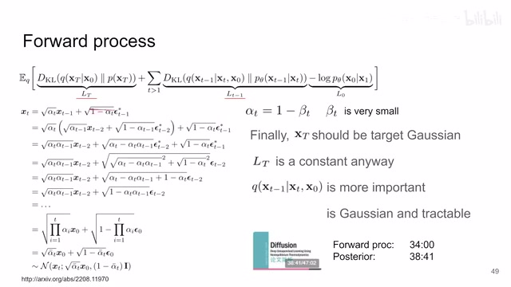
00:16:05–00:18:05 · 画面 053对吧那么然后你就跟着这个化解对不对整理出对于这个 epsilon t-2它的这个系数和这个 epsilon t-1它这个系数它是不变的那这个时候呢我们有一个很好的性质就是两个这个 normal distribution那接下来说是两个均值都为 0然后他们有各自自己不同的这个方差的这么两个这个 normal distribution他们合并的时候呢我们的这个新的这个 normal distribution首先均值还是 0 啊它的方差呢就是两个这个方差的这个平方核在开根号那么这个时候呢
你就发现它给它定义成一开始这样一个形式的一个好处了就是你化解到最后对吧有这个α这个形式化解到最后对吧它形成了这样一个形式那这个形式的非常好就是你可以直接通过这个参数从这个 x0就是最开始的原始的图像一步生成这个 xt也就是说你前向加噪声的过程不需要去具体的这个不需要去一步一步的迭代了这是一个非常好的一个性质所以你发现最终这个 q given x0 到 xcapital t 这个东西它长这个样子这个时候它的这个均值和方差是明白的同时呢因为你这个过程中是一个前向过程没有任何需要学习的参数所以它就是一个定值所以最终导致的前面这一项这个 lt 整个这一项这个 care divergence 它是一个常数那么然后呢我们就要关心这一项了
这项呢你发现虽然它写的是前向过程对吧但是它的这个 condition 是 xt 你想要推导它就首先要根据对吧我们从 xt-1 到 xt 的这个关系然后给它逆着写过来
00:18:05–00:18:15 · 画面 054
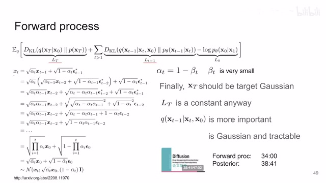
00:18:05–00:18:15 · 画面 054我现在用这个 xt 去表示这个 xt-1 那这部分的详细的推呢你可以看我们上个视频这个 38 分 41 秒这个地方那这里快速的推一下结论就是我根据之前的这个式子就是我又从 x0 可以推导到 xt 或者是 xt-1 然后我还有这个根据 xt-1 推到 xt 这么一个式子我给它反过来写用现在用 xt 去表达 xt-1 用这个 x0 去表达 xt-1 对吧然后这两个东西
00:18:15–00:18:42 · 画面 055
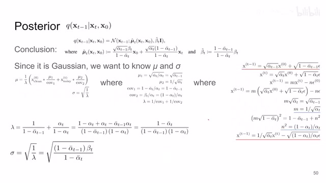
00:18:15–00:18:42 · 画面 055它们都是条件嘛对吧我们给它合并起来那最终的情况的结果呢就是这个样子那然后我们再回到这个项对吧我们 KL divergence 里面前面这个后验概率已经解决了我们现在来看一眼这个前项的这个网络的这个输出是怎么解决的
00:18:42–00:19:31 · 画面 056
00:18:42–00:19:31 · 画面 056它呢其实很简单就是我们还是说的嘛根据定义我们只要让我们这个网络去直接输出一个均值一个方差然后我们就按照正态分布这个东西来采样就好了那这个是它的定义式啊那么这样子呢我们来开始实际的去计算这个 KL divergence 那根据两个高深基础优深之间的这个 KL divergence 公式对吧长这个样子我们来看这个首先负二分之一这种常数这个东西作为一个 loss 来讲我们是不太关注的然后呢前面这个 logsigma2 比上这个 sigma1 因为 sigma2 和 sigma1 我们在这个变化的过程中认为它的这个 sigma 是尽量保持不变的所以它呢也可以被视为一个常数那同理的这个 sigma1 的平方除以这个两倍的 sigma2 的平方一样的我们把它当成这个常数就可以了
00:19:31–00:19:32 · 画面 057
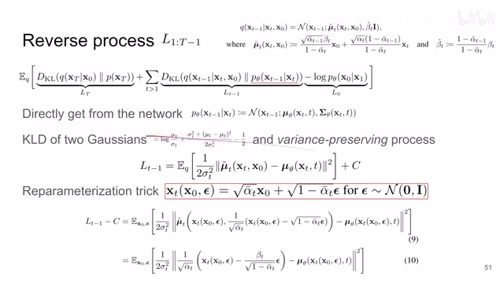
00:19:31–00:19:32 · 画面 05700:19:32–00:20:05 · 画面 058
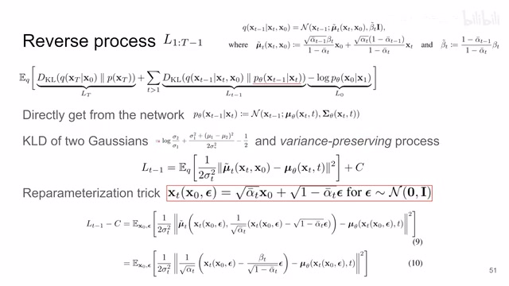
00:19:32–00:20:05 · 画面 058那最终不是常数的是谁呢就是最终剩下这个μ1 减去μ2 就是两个高深自主标准之间它们均值的这个差了这个平方再除上这个两倍的这个σ2 的这个平方那写出来呢就是这个样子对吧所有的常数都塞到这个 c 里面这个μtel 的 t 对吧就是我们这里写的 given 和 x0 来表达这个 xt-1 它的一个后验概率
00:20:05–00:20:06 · 画面 059
00:20:05–00:20:06 · 画面 05900:20:06–00:20:57 · 画面 060
00:20:06–00:20:57 · 画面 060就是它的后验概率的均值长在这里然后减去我们网络的输出它的均值就是这里这个就是我们 LT-1 的一个形式那么到这里一步其实你是已经可以算了因为对于一个前向的过程来说你总知道 X0 和知道 XT 但是对于一个反向的过程来说 X0 你是不知道的那怎么办呢我们得想个办法把这里的这个 X0 给它去掉这样子让我们做起来也方便对吧如果我们只需要依赖这个 xt 就好了对不对那这里呢做的一个方法就是我再次把这个 parameterization trick 掏出来对吧我们来看看因为刚刚我们之前说过的我们是如何一步从这个 x0 生成这个 xt 的对吧根据这样一个式子我们一步从这个 x0 就直接生成了这个 xt 那现在我用这个式子我用它这个 xt 来表达这个 x0 就相当于这个
00:20:57–00:20:58 · 画面 061
00:20:57–00:20:58 · 画面 06100:20:58–00:21:35 · 画面 062
00:20:58–00:21:35 · 画面 062把右边这一项移到左边来然后呢再除上一个这个根号下 alpha bar t 对吧那就是这个样子那我现在把这个 x0t 换成由这个 xt 表达的这个 x0 这样一个形式那长这个样子对吧然后更具体来说呢我们来看到这个 mutualt 它表示什么对吧它的定义在这里啊我们实际上就是把这个 x0t 换成这一串那么画景的过程呢我其实也写出来了我们来看到这一样啊
00:21:35–00:23:35 · 画面 063
00:21:35–00:23:35 · 画面 063我们还是之前说的根据现在这个 Parameterization 的公式对吧把我们的这个 x0 用 xt 来表示出来就是这个样子那么根据这个公式我们带进来对吧这一串是 x0 放到这里来这块是 xt 不变我们现在看 xt 前面的系数是什么这个根号下αbar t.1 对吧就是这里超过来βt 呢根据定义嘛 1-αt 对吧那底下这个除的是 1-αtbar 这个东西也放在这里来那根据这个地方的这个系数拿到这里来对吧那这个是 x那这样子你就把这个 X0 替换成这个 XT 了那同样的后面呢你就整个这一串照抄对吧但是为了两项相加方便你在右边这个这一项分子和分母同时乘上一个这个根号下这个α8T 对吧你分子分母同时乘一下这样你好加那么相加的时候呢分母不要看你把分子里面这个口号都打开乘进去你发现这一项乘这一项正好就等于这一项乘这一项
那你把这个αt 拆成一下根号下αt 的平方一个αt 乘上这个连乘的形式它就变成了这个α bar t 对吧就是这样还剩下一个αt 对吧那正好这两项就相互抵消掉了那么最后一项呢这个放到这里来那么再往下化解呢你从后面这一项里面提出一个根号下α bar t 点 1 来提出来一个来那这边就剩下一个根号下α8t.1 它跟这个根号下αt 相乘就是根号下α8t 再跟它相乘最后化解出来就是α8t 就是这个样子那就上下两个一 cancel 就剩下了这个系数所以最终整个这个式子带到这个式子里面来化解出来的呢就是前面的系数呢就是这个
刚好像αt 分之一写在这里那么还有后面一项呢那这个ε相对就比较简单这个ε它只在这个 x0 这里出现嘛对吧那就是这一项对吧乘上这个系数照抄过来因为移了一个项变成符号乘上原来有的这一堆系数在这里对吧你经过一通化解就化解成了这个样子就刚好像αt 提出来提到前面来对吧那最后这个形式就右边这一片对吧
00:23:35–00:23:50 · 画面 064
00:23:35–00:23:50 · 画面 06400:23:50–00:23:51 · 画面 065
00:23:50–00:23:51 · 画面 06500:23:51–00:24:14 · 画面 066
00:23:51–00:24:14 · 画面 066就是这个形式长这个样子那最终呢根据我们一系列的操作我们现在把这个 x0 去掉了我们现在这个μtθ里面呢就只剩下了关于 xt 的这么一个函数这个是这样子然后呢我们现在就可以把目光投向这个μθ我们的这个网络了
00:24:14–00:24:15 · 画面 067
00:24:14–00:24:15 · 画面 067那然后我们来看到对吧？根据这个 loss 的形式你也知道对吧？本质上我们是希望这个值跟前面这个值是尽量接近的。而我们实际在这个模型推断的时候呢，这个模型它只能拿到这个 xt 这个加噪的图像，它是不知道这个 x0 这个没有噪声的图像对吧？所以呢，它只有这个 xt 能作为模型的输入。
00:24:15–00:24:16 · 画面 068
00:24:15–00:24:16 · 画面 06800:24:16–00:24:19 · 画面 069
00:24:16–00:24:19 · 画面 06900:24:19–00:25:41 · 画面 070
00:24:19–00:25:41 · 画面 070这就是为什么我们之前要通过各种办法，通过各种代换把这个 X0 去掉，全部用 XT 来表示，原因就在这里。那自然的，我们希望我们模型的这个输出它跟左边的这个像一样一样，之后这个 MSE 才能等于 0 嘛对不对？所以呢，就是写成这样一个形式就直接照抄吧对吧？抄下来，但是在抄这个的过程中呢，我们发现对吧？首先 XT 是作为模型的输入，我们是知道的。
x0 我们不用考虑，我们只知道 xt 就行了。但是呢，在这个公式里面有一个我们不知道的东西呢，就是这个 y。这个 y 就是我们在从 x0 产生 xt 的时候我们加了这个随机的这个噪声，但是现在它我们是，但是现在我们只有 xt，我们是不知道这个噪声是多少的。那这也就意味着我们的网络只要把这个噪声这一项估计出来对吧？就用这个θ这个参数，given 当前的这个 xt 把这个 noise 这一项给它估计出来，然后呢你乘上前面的各种系数对吧？根据我们之前的推导的这个式子，这个式子对吧？直接写过来，那也就是像这样子，你就可以通过这个式子来估算我们的这个 givenxt 到 xt.1 这个模型的输出的它的这个均值。
00:25:41–00:26:28 · 画面 071
00:25:41–00:26:28 · 画面 071有了它的均值，你再拿到它的均值对吧？就一起来算 KL divergence，就最终能把这个 log likelihood 给它算出来。最后一层层拨洋葱一样拨到最后，你发现我们其实本质上只需要让我们的网络去估计一下这个 noise。所以你会听到有很多人说，这把 diffusion 里面这个网络它是一个 noise estimator，那为什么呢？原因就在这里。那么有了它之后，因为它的这个形式跟前面这个形式实在是太像了，我们把一些没用的东西给它销毁掉对吧？
那最终呢，其实我们就是在估计这个 noise，就是我们之前从 x0 得到 xc 的时候添压这个 noise。那当然了，做了实验中发现啊，我如果把这前面这一堆参数去掉，它可能优化的效果更好更稳定。所以呢，经过化解之后，我们从这个 loss 变成了这样一个 loss。那么这个呢，就是 ddpm 里面最核心的它的这个 loss 的这个 diffusion 这个 loss 它的推导。那么当然还没结束对吧？你看到我们的这个。
00:26:28–00:26:39 · 画面 072
00:26:28–00:26:39 · 画面 07200:26:39–00:26:45 · 画面 073
00:26:39–00:26:45 · 画面 07300:26:45–00:26:54 · 画面 074
00:26:45–00:26:54 · 画面 074整个这个 negative log 这个库里面它一共有三项，我们已经解决了第一项第二项，那还有最后一项怎么解决呢？那么答案呢是不去解决的。那这里呢，作者使用的这个方法呢是一个独立的一个高斯过程和我们的主网络相互独立的一个高斯过程。那同时呢，他把连续的值变成离散化，那这个过程中因为作者认为是和我们的主过程是独立的，他就不考虑了。
00:26:54–00:27:01 · 画面 075
00:26:54–00:27:01 · 画面 07500:27:01–00:28:26 · 画面 076
00:27:01–00:28:26 · 画面 076那为什么是高斯过程呢？你想，我们在一开始的最早的那一篇的这个 Diffusion 里面，它在处理这个一开始的边界条件的时候，从 X0 到 X1 的时候，它就直接默认说我的这个前向过程从 X0 到 X1 和后向过程从 X1 到 X0 就在这一步它们是相同的一个操作。所以呢，你也不要苛求这一篇文章里面能给出一个什么好的解释来。
但是呢，凡是有这么一个方法，你总能把这个概率密度这个值给它写出来，写出来呢就是这样。具体你从一个连续的数变到一个离散的值，它什么的概率什么这个东西，你按照它的标准来写对吧？本质上就是一个把连续的一个数值的空间给它离散化划分到一个离散的值的过程。那么一个特定的离散值它所对应的连续的值的空间在上下界是多少对吧？这两个式子给出了。
除了边界上这两个情况对吧？又是一个把中间这个像素的区间从-1 到 1 就给它分成了 255 份嘛，是这样子的。那你根据它呢，硬要把这个条件概率写出来呢，就是这个样子。然后这个 d 呢，就是所有的这个像素的数量，每一个像素是相互独立的嘛。实际上作者最后在使用的时候呢，我就直接把这个值当成我们的这个最后的图像的输出了，也不需要再去加额外的噪声啊。
00:28:26–00:28:27 · 画面 077
00:28:26–00:28:27 · 画面 07700:28:27–00:28:45 · 画面 078
00:28:27–00:28:45 · 画面 078那么到这里呢理论上我们就把这个 Negative Log 解决了讲了这么大一圈对吧实际上就是只有中间这一块最有用然后我们根据它提炼出来一个 Noise 下面我们来看具体的这个方法对吧首先根据我们之前的推导根据 Reparameterization 这个推导对吧我们根据 X0 原始的图像一步到位生成这个 DT 步加噪的这个图像这是个前向的过程
00:28:45–00:28:48 · 画面 079
00:28:45–00:28:48 · 画面 07900:28:48–00:28:56 · 画面 080
00:28:48–00:28:56 · 画面 08000:28:56–00:29:40 · 画面 081
00:28:56–00:29:40 · 画面 081然后根据这个 loss 我们去训练我们的模型那就在看这里对吧我们首先从 1 到 definitive t 我们从这些这个 time step 这些时间的范围中采样出一个值来然后呢根据前面这个公式给它加噪对吧扔到这个模型里面来更新一下这个模型算一下 t 度对吧更新一下模型训练一下那么在推断的时候呢我们要真正生成一张图片的时候呢我们会从这个 gaussian distribution 开始 random noise 开始这个式子
00:29:40–00:29:42 · 画面 082
00:29:40–00:29:42 · 画面 082我们之前的定义对吧我们是反向的过程也是高顺就是优顺我的这个均值是网络估计的那网络估计之后的均值到底是什么呢根据这个定义式的长这个样子最容易同化减对吧 xt 这是你网络的这个输出乘上前面这个系数 xt 减去它对吧最后你就是
00:29:42–00:30:00 · 画面 083
00:29:42–00:30:00 · 画面 08300:30:00–00:30:01 · 画面 084
00:30:00–00:30:01 · 画面 084你估计出来的这个均值那估计出来这个均值不算完过来是要采样的那有了这个均值你还需要知道有方差同时你再使用一个这个 Z 它是从这个 normal distribution 中采样出来的对吧来表达这个随机性这样子你这个采样的过程就可以写成这个形式了那采样之后呢你就可以从这个 XT 来推断出这个 XT-1 来了那么到这一步呢我们其实还有一个不知道的数就是这里我们这个
00:30:01–00:30:03 · 画面 085
00:30:01–00:30:03 · 画面 08500:30:03–00:30:06 · 画面 086
00:30:03–00:30:06 · 画面 08600:30:06–00:30:18 · 画面 087
00:30:06–00:30:18 · 画面 08700:30:18–00:30:19 · 画面 088
00:30:18–00:30:19 · 画面 08800:30:19–00:30:57 · 画面 089
00:30:19–00:30:57 · 画面 089把向过程的它的方差是多少我们其实是不知道的就是这个 sigma t 那这个时候呢你按照原来的一篇论文的这个逻辑你应该是从网络中再伸出一个头来对吧来预测一下这个值是多少但实际上呢在这篇中呢作者的处理呢就是作者试了把它设置成一个固定的数不需要学习跟这个 beta t 有关的一个固定的数无论你是这么设置还是这么设置他们出来的结果呢是差不多的好的那么以上就是整个这个 DDTM 的一个方法一个推导了那直接看到一些结果对吧作者汇报一些美好的数字 Inception score 和 FID 越高越好越低越好那作者还有更多的可视化提供很多样例包括你在这个 Diffusion 一步一步循环的过程中这些值都是怎么变化的有哪些规律等等那感兴趣的朋友呢非常推荐的你到原文中查看那么这个呢就是作者一开始提供的一些高清的图像生成的样例
00:30:57–00:30:58 · 画面 090
00:30:57–00:30:58 · 画面 09000:30:58–00:31:01 · 画面 091
00:30:58–00:31:01 · 画面 09100:31:01–00:31:21 · 画面 092
00:31:01–00:31:21 · 画面 09200:31:21–00:31:26 · 画面 093
00:31:21–00:31:26 · 画面 09300:31:26–00:31:42 · 画面 094
00:31:26–00:31:42 · 画面 094最后呢这个例子显示了这个 diffusion 的这个生成的过程对吧从一堆 random noise 里面逐渐逐渐逐渐的一步步迭代最后迭代出一个相对有意义的这个图像好的那么以上就是我对这篇论文的一个快速的一个整理那么感谢您的收看再见
00:31:42–00:31:43 · 画面 095
00:31:42–00:31:43 · 画面 095转写与来源说明 · 2 个自动复核提示
保留 175 个原始语音片段，2 个片段触发自动复核提示。提示仅用于定位可能的术语、重复或识别问题，不等于已确认错误。
讲解画面为源视频截图（640×360），不是可编辑 PPT 文件。全片按每秒 2 帧扫描内容变化，逐步展开页保留；连续动画保留代表画面。清晰度受源视频限制。
原视频：paper/合集_2026-10-16_内容生成/[论文速览]Denoising Diffusion Probabilistic Models DDPM[2006.11239].mp4
SHA-256：27396245621bfcf7f10a4d0f1cc02ff735459f7f74f8d092d8ef93c86645f3e8
比如说高性 distribution
这么两个这个 normal distribution
全文按视频语音与画面制作。原论文可从上方链接下载；完整资料包保留全文、原始逐字稿、字幕和校对记录。